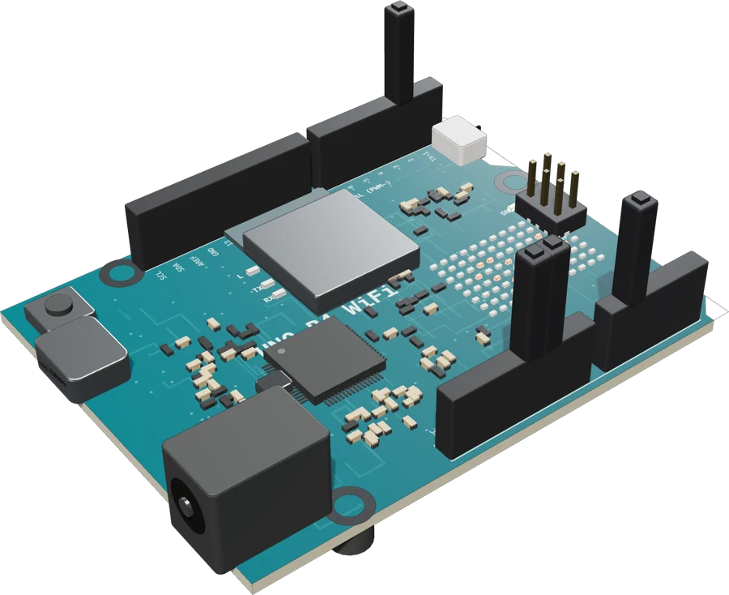
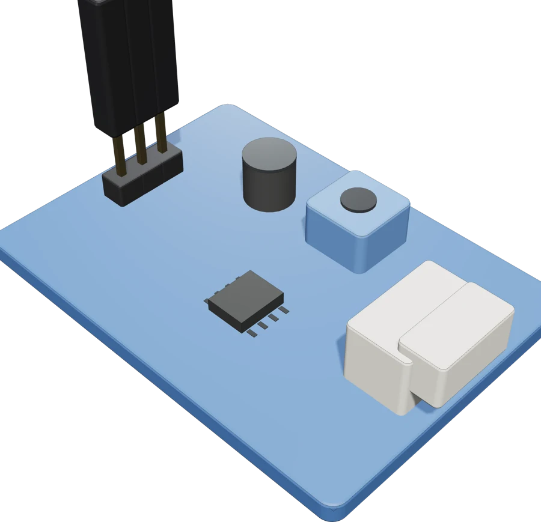
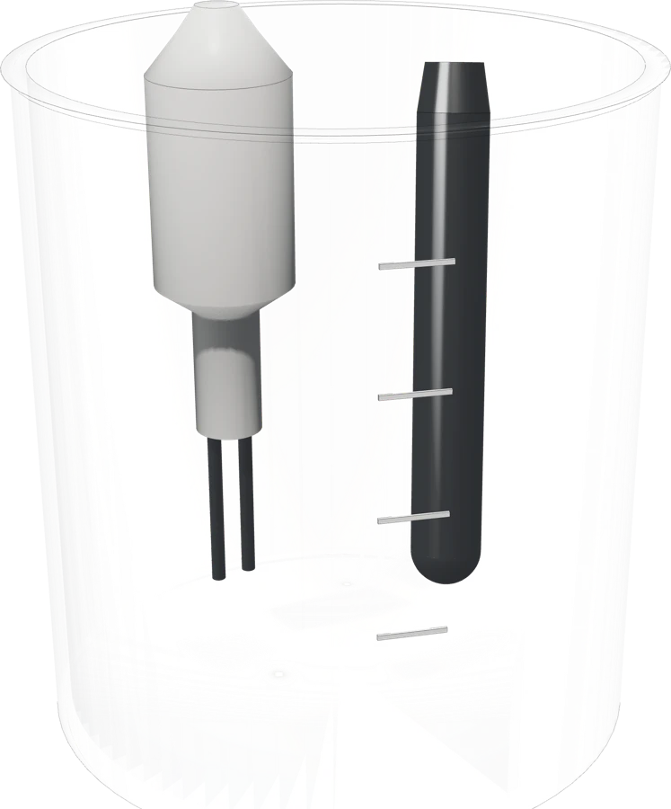
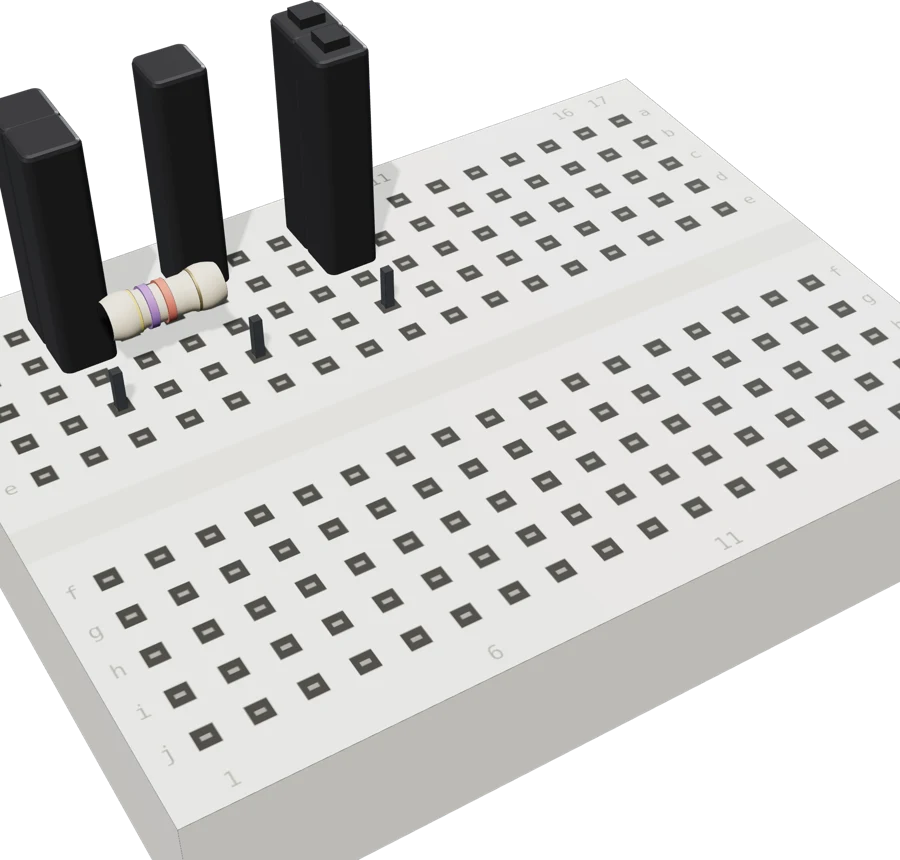

IoT · Arduino UNO R4 WiFi
Smart Shrimp Pond MONITORING SYSTEM
วัดค่า TDS และอุณหภูมิน้ำในบ่อกุ้ง ส่งขึ้นเว็บทุก 1 วินาที และแจ้งเตือนทันทีเมื่อ TDS เกิน 800 ppm
อุปกรณ์




โค้ด
arduino.ino อ่านเซนเซอร์แล้วส่งข้อมูลขึ้นเว็บ · server.js รับข้อมูล เก็บลง SQLite และส่งให้หน้าเว็บ · ชื่อ/รหัส Wi-Fi และ API key เป็นค่าตัวอย่าง
สมาชิก
- พรวัฒนา วัฒนธำรงค์ 68070115
- พุฒิพงศ์ พฤฒิสถาพร 68070129
- ภูวดล ไตรพรหม 68070147